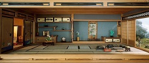
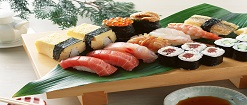

Домашняя
Медиа
Галерея
О себе
Контакты
Колесников Александр
Долгий путь начинается с малого
Японская живопись
Для японской живописи характерно отведение ведущего места природе и изображение её в качестве носительницы божественного начала.

Архитектура
Традиционные деревянные жилые дома простых японцев.

Кухня
Одно из наиболее популярных за пределами страны японских блюд — суши.
Напитки
Традиционным и популярным напитком японцев является зелёный чай.
Пейзажи
Есть в Японии особенно любимые японцами цветы.
Оригами
Древнее искусство складывания фигурок из бумаги.
Зима
Японию стоит посетить даже зимой, несмотря на довольно таки нежаркие температуры воздуха.
Дракон
Один из известнейших японских драконов — Ямата-но ороти (山多の大蛇).
Аниме
Аниме (или японская анимация) имеет высокую популярность во всём мире.
Контакты
Россия, Тула 300000
Phone: 8-953-4321-546
E-mail: deadpoolweid@yandex.ru
Лабораторные работы
HTML
Таблицы
Фрейм
Макет
Найди меня
Найди меня на Facebook
Подпишись на твиттер
Добавь в друзья вконтакте
{kind=link}
{kind=link}
{kind=link}
{kind=link}
{kind=link}
{kind=link}
{kind=link}
{kind=link}
{kind=link}